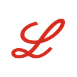

LLYNYSE · Eli Lilly and CompanyCifras fundamentales: SEC EDGAR (10-Q del trimestre cerrado el 30 de junio de 2026, presentado el 5 de agosto de 2026; 10-K del ejercicio 2025, presentado el 12 de febrero de 2026; XBRL companyfacts) y comunicado de resultados del 5 de agosto de 2026. Precio de mercado: cierre del 23 de septiembre de 2026 (Yahoo Finance). "TTM" = últimos doce meses (3T2025 a 2T2026). "Mil millones" = billion de EE.UU. Este documento es 100% analítico — no constituye una recomendación de compra, venta ni mantenimiento. Ver disclosure completo al pie.
01 — Resumen Ejecutivo
Eli Lilly cerró el segundo trimestre de 2026 (trimestre cerrado el 30 de junio) con ingresos de $22.974 millones, un aumento de 48% interanual, y una utilidad operativa de $8.978 millones (+31%). El crecimiento vino casi entero de la tirzepatida: Mounjaro facturó $9.943 millones (+91%) y Zepbound $4.928 millones (+46%). Fuera de EE.UU. los ingresos crecieron 80%, impulsados por la incorporación de Mounjaro a la lista nacional de reintegro de medicamentos de China (NRDL) en el primer trimestre del año, que multiplicó el volumen a cambio de un precio mucho más bajo. La utilidad por acción fue de $7.94 (GAAP) y $8.38 (no-GAAP), ambas cifras después de absorber $3.03 por acción de cargos por investigación y desarrollo adquirida (IPR&D) por las compras de Orna Therapeutics y Ajax Therapeutics. Con estos números, la compañía subió su guía de ingresos 2026 por segunda vez en el año, a $85-87 mil millones, desde $80-83 mil millones en febrero.
La tensión central de este informe no está en la calidad del negocio sino en su duración. El 10-K de la compañía ubica el vencimiento de la patente de compuesto de la tirzepatida en 2036 en EE.UU., 2037 en los principales países europeos y 2040 en Japón, y en julio de 2026 varios laboratorios de genéricos ya presentaron solicitudes (ANDA) para copiar Mounjaro y Zepbound antes de esa fecha (Sección 03). Una farmacéutica no se valúa como una compañía de software que puede crecer a perpetuidad: cada producto tiene una fecha a partir de la cual sus ventas caen entre 50% y 90% en pocos años. Por eso el método dominante en el research de pharma —y el que usa este informe como método intrínseco— es la suma de partes producto por producto hasta la pérdida de exclusividad (LOE), más el pipeline ponderado por la probabilidad de aprobación publicada por la industria.
Ese método da $386.44 por acción en el escenario Base, y $430.97 si la patente de sustancia y producto que la tirzepatida tiene listada hasta 2039 en el Orange Book de la FDA resistiera los juicios. Un DCF convencional que supone que la franquicia se renueva para siempre da $723.66. Para llegar al precio de $1,150.99 con ese mismo DCF a perpetuidad, los ingresos tendrían que crecer 16.2% anual durante cinco años seguidos, hasta unos $184 mil millones en 2031: casi el doble de los $94.3 mil millones que el consenso de Wall Street espera para 2027. Los comparables contra el sector, que tampoco usan el precio de Lilly, dan $750.91. Solo los dos métodos anclados en cómo el mercado viene valuando a la compañía —reversión a su propia media histórica ($1,168.81) y consenso de analistas ($1,325.00)— validan el precio. El blend ponderado queda en $986.03, 14.3% por debajo del mercado.
La postura resultante es neutral con sesgo bajista. El negocio no muestra deterioro —volumen +60%, guía subida dos veces, estimados en alza—, pero todo lo que este informe puede medir sin mirar el precio queda muy por debajo de él: el precio ya incorpora que la compañía gane la próxima generación del mercado de la obesidad, no solo la actual. Las Secciones 03 a 12 recorren el negocio, los números, el balance y los riesgos antes de llegar a esa conclusión en la Sección 13.
02 — Historia y Evolución
El coronel Eli Lilly, químico farmacéutico y veterano de la guerra civil estadounidense, fundó la compañía en Indianápolis en 1876. El primer gran hito llegó en 1923, cuando Lilly se convirtió en la primera empresa en producir insulina a escala comercial en colaboración con los investigadores de la Universidad de Toronto que la habían descubierto. La diabetes quedó desde entonces en el centro de la identidad de la compañía, un siglo antes de que la tirzepatida la convirtiera en el negocio más rentable de la industria.
A fines del siglo XX Lilly construyó una cartera diversificada con Prozac (1987, el antidepresivo que definió una categoría), Humalog (1996, la primera insulina análoga de acción rápida), Zyprexa, Cialis y Alimta. La década de 2010 fue de transición: vencieron las patentes de Zyprexa, Cymbalta y Cialis, los ingresos se estancaron cerca de los $20-22 mil millones y el crecimiento dependió de Trulicity (2014), el agonista del receptor GLP-1 de aplicación semanal que llegó a facturar más de $7 mil millones al año. En 2017 asumió como CEO David Ricks, que reorientó la compañía hacia cinco áreas (diabetes y obesidad, oncología, inmunología, neurociencia y dolor) y escindió la división de salud animal (Elanco, 2018-2019).
El punto de quiebre fue la aprobación de Mounjaro por la FDA en mayo de 2022 y de Zepbound en noviembre de 2023. La tirzepatida es un agonista dual de los receptores GIP y GLP-1 que produjo pérdidas de peso de alrededor de 20% en los ensayos de obesidad, por encima del estándar previo de semaglutida (Ozempic/Wegovy, de Novo Nordisk). La demanda superó la capacidad de producción durante 2023 y 2024, y Lilly respondió con el mayor programa de inversión en plantas de su historia (Sección 07). Los ingresos pasaron de $28.5 mil millones en 2022 a $65.2 mil millones en 2025 y $79.7 mil millones en los últimos doce meses, y la compañía se convirtió, el 21 de noviembre de 2025, en la primera farmacéutica en superar el billón de dólares de capitalización bursátil. En julio de 2024 obtuvo la aprobación de Kisunla (donanemab) para Alzheimer temprano y el 1 de abril de 2026 la de Foundayo (orforglipron), la primera pastilla GLP-1 para bajar de peso que puede tomarse a cualquier hora sin restricciones de comida ni agua.
Ingresos anuales de Eli Lilly, en miles de millones de US$ (FY2016-FY2025 y últimos doce meses a junio 2026). Fuente: SEC EDGAR XBRL (10-K). El salto a partir de 2023 corresponde a Mounjaro y Zepbound.
03 — Modelo de Negocio, Productos y Patentes
Lilly descubre, desarrolla, fabrica y vende medicamentos de marca protegidos por patentes. El margen bruto de un medicamento patentado es altísimo (83.4% en los últimos doce meses para Lilly) porque el precio no refleja el costo de fabricar la pastilla o la inyección, sino el de los diez a quince años de investigación que la precedieron y el de todos los proyectos que fracasaron en el camino. Esa renta dura mientras dura la exclusividad: cuando la patente vence y entran genéricos (moléculas pequeñas) o biosimilares (biológicos), las ventas del producto original caen fuerte en pocos años. El negocio, entonces, es una carrera permanente por reemplazar los productos que vencen con productos nuevos.
La compañía reporta sus ingresos en cuatro áreas terapéuticas. En los últimos doce meses, salud cardiometabólica (tirzepatida, Trulicity, Jardiance, insulinas) aportó 77.6% de los ingresos; oncología (Verzenio para cáncer de mama, Jaypirca, Retevmo, Cyramza) cerca de 12%; inmunología (Taltz, Ebglyss, Omvoh, Olumiant) cerca de 7%; y neurociencia (Kisunla, Emgality) alrededor de 2%. EE.UU. representó 62.7% de los ingresos del último trimestre. Casi toda la venta en EE.UU. pasa por tres mayoristas (McKesson, Cencora y Cardinal Health), y una porción creciente se vende directo al paciente por LillyDirect, la plataforma propia que la compañía usa para Zepbound y Foundayo con pago en efectivo.
Ingresos por producto, últimos doce meses a junio 2026 (miles de millones de US$). Calculado como FY2025 + primer semestre 2026 − primer semestre 2025, con las tablas de desagregación del 10-K 2025 y el 10-Q del 2T2026. La suma reproduce los $79.67 mil millones de ingresos TTM.
El gráfico muestra la concentración que define el caso: Mounjaro ($32.5 mil millones) y Zepbound ($16.9 mil millones) son la misma molécula, y juntos equivalen a 62.1% de los ingresos. El resto de la cartera suma $30.2 mil millones, pero la mayor parte está en productos que pierden exclusividad antes de 2031. La tabla siguiente resume las fechas estimadas de vencimiento que publica la propia compañía en su 10-K (incluyen extensiones de plazo de patente y exclusividades pediátricas cuando corresponde) y la exposición al programa de negociación de precios de Medicare creado por la Ley de Reducción de la Inflación (IRA).
| Producto | Ingresos TTM | Tipo | Patente compuesto EE.UU. | Europa / Japón | Otros eventos |
|---|---|---|---|---|---|
| Mounjaro / Zepbound (tirzepatida) | $49.47B | Péptido (NDA) | 13-may-2036 | 2037 / 2040 | Patente de sustancia/producto hasta 14-jun-2039 y de uso hasta 2041 (Orange Book); ANDA de genéricos presentadas en jul-2026 |
| Foundayo (orforglipron) | $0.10B (2T26) | Molécula pequeña | 26-sep-2037 | n.d. | Exclusividad de nueva entidad química hasta 1-abr-2031 (Orange Book) |
| Verzenio (abemaciclib) | $5.85B | Molécula pequeña | 2031 | 2033 / 2034 | Precio negociado IRA desde 1-ene-2028; ANDA de Cipla (abr-2026) |
| Trulicity (dulaglutida) | $4.23B | Biológico | 2027 | 2029 / 2029 | Precio negociado IRA desde 1-ene-2028 |
| Jardiance (empagliflozina)* | $4.07B | Molécula pequeña | 2029 | 2029 / 2030 | Colaboración con Boehringer vigente hasta 31-dic-2028; precio IRA desde 2026 |
| Taltz (ixekizumab) | $3.54B | Biológico | 2030 | 2031 / 2030 | — |
| Omvoh / Jaypirca / Ebglyss / Kisunla / Inluriyo | ≈$2.9B* | Mixto | 2035-2039 | 2033-2040 | Lanzamientos recientes, en crecimiento |
Fuente: 10-K 2025 de Eli Lilly, sección "Patents and Intellectual Property" (fechas estimadas de la compañía); FDA Orange Book (archivo de datos al 24-sep-2026) para tirzepatida y Foundayo; 10-Q del 2T2026, Nota 9 (litigios Hatch-Waxman); CMS, listas de medicamentos seleccionados para negociación (Jardiance en el primer ciclo, precio vigente desde 2026; Trulicity y Verzenio en el tercer ciclo, anunciado el 27-ene-2026, precio vigente desde 1-ene-2028). *Jardiance es un producto de Boehringer Ingelheim; Lilly recibe una participación en las ventas, que se reconoce como ingreso de colaboración. *Lanzamientos recientes: ingresos del 2T2026 anualizados ($737 millones × 4), no TTM, porque son productos en rampa.
Ingresos TTM (miles de millones de US$) de los cinco productos principales, ordenados por año de vencimiento de la patente de compuesto en EE.UU. Casi $18 mil millones (22% de los ingresos) pierden exclusividad o entran al régimen de precios negociados de Medicare antes de 2031.
Dos detalles de la tabla importan para la valuación. Primero, la tirzepatida es un péptido sintético aprobado por la vía de medicamentos químicos (NDA), no como biológico: la protección regulatoria de datos en EE.UU. vence en 2027, lo que habilitó a los fabricantes de genéricos a presentar sus solicitudes en julio de 2026 (la ley permite hacerlo un año antes del fin de esa protección). Lilly anunció que iniciará juicios por infracción de patentes, lo que en general activa una suspensión de 30 meses de la aprobación de las copias. El riesgo real no es un genérico en 2027, sino que un tribunal invalide patentes y adelante la fecha de 2036. Segundo, la colaboración con Boehringer Ingelheim por Jardiance en los mercados más importantes termina el 31 de diciembre de 2028 según el 10-Q, de modo que ese ingreso (unos $4 mil millones anuales, incluidos hitos de venta de $500 millones en el primer semestre de 2026) desaparece en gran parte antes de que venza su patente.
04 — Desarrollos Recientes y Perspectiva
El dato más importante del segundo trimestre no es el crecimiento de 48% sino su composición: el volumen subió 60% y el precio neto cayó 13%. En EE.UU. el volumen creció 37% con precios 3% más bajos, aunque la compañía aclaró que, sin los ajustes favorables de estimaciones de descuentos y reintegros de períodos anteriores (mayormente de Trulicity, Zepbound y Mounjaro), la caída de precio habría sido de alrededor de 9%. Fuera de EE.UU. el volumen creció 113% con precios 36% más bajos, por el ingreso de Mounjaro al NRDL chino. La estrategia es explícita: bajar precio para ampliar el acceso y ganar volumen. En EE.UU. eso incluye los precios reducidos de pago en efectivo de Zepbound por LillyDirect, los acuerdos voluntarios de precios firmados con el gobierno federal en el primer trimestre de 2026, y el programa "Bridge" de Medicare, que desde el 1 de julio de 2026 y hasta el 31 de diciembre de 2027 da a los beneficiarios acceso con descuento a Zepbound y Foundayo.
Ingresos trimestrales totales y de tirzepatida (Mounjaro + Zepbound), en miles de millones de US$ (B), 1T2025 a 2T2026. Los trimestres de 2025 se obtienen restando los datos acumulados publicados en el 10-Q y el 10-K. Fuente: SEC EDGAR.
Foundayo (orforglipron). La FDA la aprobó para obesidad el 1 de abril de 2026 y los envíos empezaron el 6 de abril, con un precio de pago en efectivo desde $149 mensuales para la dosis más baja. El arranque fue más lento que el de la pastilla rival de Novo Nordisk (Foundayo sumó 7.335 recetas en su cuarta semana) y facturó $98 millones en el trimestre, pero la inclusión en Medicare desde julio aceleró la adopción, y en septiembre David Ricks indicó que Foundayo ya capta una de cada tres nuevas iniciaciones de tratamientos orales para bajar de peso en EE.UU. En el segundo trimestre la compañía presentó además la solicitud de aprobación para diabetes tipo 2. Por ser una molécula pequeña que no requiere cadena de frío ni inyección, es el producto con el que Lilly apuesta a llegar a los mercados donde la inyección semanal no escala.
Retatrutida. El agonista triple (GIP, GLP-1 y glucagón) completó su paquete de fase 3 en obesidad: en TRIUMPH-1 (mayo 2026) la dosis de 12 mg logró una pérdida de peso promedio de 28.3% a 80 semanas y 30.3% a 104 semanas, niveles comparables a la cirugía bariátrica; TRIUMPH-2 y TRIUMPH-3 (julio 2026) confirmaron el resultado en pacientes con diabetes tipo 2 y con enfermedad cardiovascular (21.6%-22.6% de pérdida de peso con 9-12 mg en TRIUMPH-3). Lilly planea presentar la solicitud de aprobación (BLA) ante la FDA en el primer trimestre de 2027 para obesidad, apnea del sueño y dolor por artrosis de rodilla.
Compras. Lilly usó su generación de caja para comprar pipeline a un ritmo inédito. En el primer semestre de 2026 cerró (valores de la contraprestación a la fecha de compra, 10-Q, Nota 4) las compras de Ventyx Biosciences ($1.18 mil millones, antiinflamatorios orales), Centessa Pharmaceuticals ($6.59 mil millones, agonistas del receptor de orexina 2 para trastornos del sueño), Kelonia Therapeutics ($4.90 mil millones, CAR-T in vivo), Orna Therapeutics y Ajax Therapeutics (con cargos de IPR&D de $1.23 y $0.91 mil millones). Después del cierre del trimestre compró tres compañías de enfermedades infecciosas por hasta $3.9 mil millones y acordó la compra de AtaiBeckley (depresión resistente). También comprometió $4.5 mil millones adicionales para ampliar sus plantas de Indiana.
Competencia. El contraste con Novo Nordisk explica buena parte de la prima de Lilly: la acción de Novo cayó más de 40% en doce meses tras guiar una caída de ventas para 2026 y después de que su candidato CagriSema no lograra demostrar no inferioridad frente a la tirzepatida en un ensayo directo (febrero 2026). Los competidores que siguen son Amgen (MariTide, de aplicación mensual, con nueve estudios de fase 3 en curso) y Pfizer, que compró Metsera en noviembre de 2025. Ninguno tiene un producto aprobado en obesidad a la fecha de corte de este informe.
05 — Estados Financieros
| US$ millones | 2T2026 | 2T2025 | Var. | TTM |
|---|---|---|---|---|
| Ingresos | 22,974 | 15,558 | +47.7% | 79,666 |
| Costo de ventas | 3,268 | 2,448 | +33.5% | 13,225 |
| Margen bruto (GAAP) | 85.8% | 84.3% | +1.5 pp | 83.4% |
| Investigación y desarrollo (sin IPR&D adquirida) | 3,819 | 3,336 | +14.5% | 14,596 |
| Marketing, ventas y administración | 3,430 | 2,753 | +24.6% | 12,236 |
| IPR&D adquirida | 2,776 | 154 | n.s. | 4,545 |
| Utilidad operativa | 8,978 | 6,867 | +30.7% | — |
| Utilidad neta | 7,095 | 5,661 | +25.3% | 26,711 |
| EPS diluido GAAP | $7.94 | $6.29 | +26.2% | $29.80 |
| EPS no-GAAP | $8.38 | $6.31 | +32.8% | $31.50 |
Fuente: comunicado de resultados del 2T2026 y SEC EDGAR XBRL. TTM = suma de 3T2025, 4T2025, 1T2026 y 2T2026 standalone (los trimestres se aíslan restando los acumulados del año). EPS no-GAAP trimestral: $7.02 (3T25), $7.54 (4T25), $8.56 (1T26), $8.38 (2T26). La utilidad operativa TTM no se informa porque la compañía no publica esa línea en XBRL y los cargos especiales de 3T y 4T de 2025 no están desagregados en el mismo formato.
Tres lecturas de la tabla. Primero, el margen bruto subió 1.5 puntos pese a la caída de precios, por menores costos de producción a mayor escala y una mezcla más cargada de tirzepatida: el precio cae, pero el costo por dosis cae más rápido. Segundo, la inversión en I+D creció 14.5%, bastante menos que los ingresos, y quedó en 16.6% de las ventas del trimestre (18.3% en los últimos doce meses), el extremo bajo del rango de 15%-25% de la pharma grande. No es que Lilly investigue poco en términos absolutos ($14.6 mil millones al año, sin contar las compras): es que las ventas crecieron más rápido que cualquier presupuesto de I+D razonable. Tercero, la IPR&D adquirida es la partida que más distorsiona el EPS. A diferencia de muchas farmacéuticas, Lilly no la excluye de su EPS no-GAAP: los $8.38 del trimestre ya incluyen $3.03 de cargos por las compras de Orna y Ajax. Sin ese cargo, el EPS no-GAAP habría sido de unos $11.41, y la Sección 13 usa esa versión "ex IPR&D" para limpiar la reversión histórica.
Margen bruto GAAP y margen de desempeño calculado (margen bruto − I+D − marketing, ventas y administración, sobre ingresos), por trimestre, en %. La definición es la que usa la compañía para su guía ("performance margin"), aplicada acá sobre cifras GAAP. Fuente: SEC EDGAR XBRL, cálculo propio.
El margen de desempeño calculado pasó de 41.7% en el primer trimestre de 2025 a 54.2% en el segundo de 2026. La guía de la compañía para todo 2026 es de 49.0%-50.5% (sobre base no-GAAP), subida desde 46.0%-47.5% en febrero. La diferencia entre el 54.2% del trimestre y la guía anual sugiere que management espera un segundo semestre con más gasto de lanzamientos (retatrutida, Foundayo en diabetes) y sin los ajustes favorables de descuentos que ayudaron al primer semestre, algo que la propia compañía menciona en su comunicado.
06 — Balance, Deuda y Capacidad de Compra
| US$ millones | 30-jun-2026 | 31-dic-2025 | 31-dic-2024 |
|---|---|---|---|
| Caja y equivalentes | 8,950 | 7,268 | 3,268 |
| Deuda de corto plazo | 7,050 | 1,635 | 5,117 |
| Deuda de largo plazo | 47,858 | 40,868 | 28,527 |
| Deuda neta | 45,958 | 35,235 | 30,376 |
| Inventarios | 16,793 | 13,744 | 7,589 |
| Goodwill + intangibles | 26,959 | 12,419 | 11,936 |
| Patrimonio neto | 33,879 | 26,535 | 14,272 |
| Activos totales | 142,283 | 112,476 | 78,715 |
Fuente: SEC EDGAR XBRL (10-Q 2T2026 y 10-K 2025). Deuda neta = deuda de corto + largo plazo − caja y equivalentes (no descuenta inversiones de largo plazo en acciones y bonos, que la compañía mantiene por fuera de la caja).
La deuda neta subió $10.7 mil millones en el primer semestre de 2026, a $46.0 mil millones, por dos usos concretos: $5.3 mil millones de inversión en plantas y $9.8 mil millones de pagos por compras de compañías (Centessa, Kelonia y Ventyx, contabilizadas como combinaciones de negocios). Esas compras explican también el salto de los intangibles, que pasaron de $6.5 a $18.1 mil millones: cuando se compra una compañía entera, la IPR&D se activa en el balance en lugar de cargarse a resultados. Contra una utilidad antes de intereses, impuestos, depreciaciones y amortizaciones (EBITDA) de alrededor de $36.7 mil millones en los últimos doce meses (utilidad antes de impuestos + depreciación y amortización + intereses netos, estimación propia), la deuda neta equivale a unas 1.25 veces, un nivel bajo para una farmacéutica de este tamaño.
En pharma, la capacidad de compra ("firepower") es parte del análisis de balance porque las adquisiciones son la forma principal de llenar el hueco que dejan las patentes que vencen. Con una deuda neta de 1.25 veces el EBITDA, Lilly podría sumar del orden de $50-70 mil millones de deuda (hasta unas 2.5-3 veces, rango en el que se mueven otras farmacéuticas grandes después de compras importantes) sin salir del grado de inversión. Es una estimación propia y aproximada, no una cifra de la compañía, pero indica que el balance no es la restricción: la restricción es encontrar activos que muevan la aguja de una compañía de casi $80 mil millones de ingresos. El inventario de $16.8 mil millones (+22% en seis meses, 60% de él producto en proceso) refleja la acumulación para los lanzamientos de Foundayo y retatrutida.
07 — Flujo de Caja y Asignación de Capital
| US$ millones | 2022 | 2023 | 2024 | 2025 | TTM |
|---|---|---|---|---|---|
| Flujo operativo (OCF) | 7,586 | 4,240 | 8,818 | 16,813 | 28,083 |
| Inversión en plantas y equipos (capex) | 1,854 | 3,448 | 5,058 | 7,841 | 9,893 |
| Flujo de caja libre (FCF) | 5,732 | 792 | 3,760 | 8,972 | 18,190 |
| Dividendos pagados | 3,536 | 4,069 | 4,680 | 5,384 | 5,785 |
| Recompras de acciones | 1,500 | 750 | 2,500 | 4,108 | 6,173 |
| Margen de OCF / margen de FCF | 26.6% / 20.1% | 12.4% / 2.3% | 19.6% / 8.3% | 25.8% / 13.8% | 35.3% / 22.8% |
Fuente: SEC EDGAR XBRL (estado de flujo de efectivo; capex = "PaymentsToAcquireOtherPropertyPlantAndEquipment"). TTM = FY2025 − primer semestre 2025 + primer semestre 2026. Las compras de compañías y de IPR&D se registran como actividades de inversión y no están restadas en el FCF de esta tabla.
Flujo operativo, capex y flujo de caja libre anuales (miles de millones de US$), 2021-2025 y TTM a junio 2026 (valores exactos en la tabla de arriba). Fuente: SEC EDGAR XBRL.
El capex se multiplicó por más de cinco en cuatro años, de $1.85 mil millones en 2022 a $9.89 mil millones en los últimos doce meses (12.4% de los ingresos, contra 3%-6% habitual en la pharma grande). Es inversión para fabricar tirzepatida, orforglipron y retatrutida a la escala que exige el mercado de la obesidad, y es la principal razón por la que el margen de FCF (22.8%) está muy por debajo del margen de desempeño (cerca de 50%). El flujo operativo trimestral es muy irregular: fue de apenas $3.2 mil millones en el cuarto trimestre de 2025 (16.7% de los ingresos) y de $10.7 mil millones en el segundo trimestre de 2026, por el armado de inventarios y el calendario de impuestos. Por eso el modelo de la Sección 13 ancla el margen de caja del primer año en el primer semestre de 2026 (37.5%), no solo en el TTM (35.3%), y lo explica.
El retorno al accionista es moderado para una pharma: $5.8 mil millones de dividendos y $6.2 mil millones de recompras en los últimos doce meses, 66% del FCF. El dividendo trimestral subió 15% en 2026, a $1.73 por acción, un rendimiento de apenas 0.60% al precio actual. La prioridad declarada de la compañía es otra: capacidad de producción y compras de pipeline, que en conjunto absorbieron más que el retorno al accionista.
08 — Comparables de Industria
| Compañía | P/E forward | PEG | EV/EBITDA | Rend. dividendo | Perfil |
|---|---|---|---|---|---|
| Eli Lilly (LLY) | 27.63x | 1.28 | 25.68x | 0.60% | Crecimiento por incretinas; LOE principal 2036 |
| Johnson & Johnson (JNJ) | 24.03x | 2.95 | 19.41x | 1.99% | Pharma + medtech diversificada |
| AbbVie (ABBV) | 17.47x | 1.30 | 17.32x | 2.61% | Inmunología post-Humira (Skyrizi, Rinvoq) |
| Merck & Co. (MRK) | 17.20x | 3.06 | 14.27x | 2.30% | Precipicio de Keytruda (2028) |
| AstraZeneca (AZN) | 15.22x | n.d. | 14.22x | 1.98% | Oncología diversificada |
| Novo Nordisk (NVO) | 11.93x | n.d. | 6.95x | 3.36% | Competidor directo en incretinas, ventas en caída |
| Promedio de estos cinco pares | 17.17x | — | 14.43x | 2.45% |
Fuente: stockanalysis.com, 24-sep-2026. PEG = P/E forward ÷ crecimiento esperado de EPS según la misma fuente; "n.d." = no disponible (crecimiento negativo o sin dato). Los múltiplos de pares son datos de una fuente agregada, no recalculados por este research desk.
P/E forward de Lilly y sus cinco comparables principales. Fuente: stockanalysis.com, 24-sep-2026.
Por P/E forward, Lilly cotiza con una prima de 61% sobre el promedio de estos cinco pares (27.6x contra 17.2x) y de 82% sobre la mediana de un grupo más amplio de 13 farmacéuticas grandes (15.22x). Los perfiles son muy distintos: Merck enfrenta el vencimiento de Keytruda, su principal producto, en 2028; Novo Nordisk guió una caída de ventas para 2026 y es el único par con un negocio directamente comparable, pero perdiendo participación frente a Lilly; AbbVie ya atravesó su precipicio de patentes (Humira) y crece con Skyrizi y Rinvoq; AstraZeneca y J&J son carteras diversificadas de crecimiento medio. Ninguno crece al ritmo de Lilly.
La pregunta obvia es si esa diferencia de crecimiento justifica la prima. Los datos del sector no permiten responderla con un ajuste mecánico: en las siete farmacéuticas con P/E y crecimiento esperado disponibles, el P/E casi no se relaciona con el crecimiento (R² de 0.05 a 0.16). En pharma el mercado paga la duración de las patentes más que el crecimiento de los próximos años. Una forma más directa de verlo: sobre el EPS 2027 de consenso ($47.34), Lilly cotiza a 24.3x, casi el mismo múltiplo que J&J, el par más caro, paga sobre sus ganancias de los próximos doce meses. La Sección 13 usa como método de comparables el P/E del cuartil superior del sector aplicado al EPS 2027 de Lilly, sin usar el precio de Lilly en ningún paso.
09 — Gobierno Corporativo y Estructura Accionaria
Fuente: SEC DEF 14A de Eli Lilly (proxy 2026, presentado el 17-mar-2026); stockanalysis.com (tenencias y posiciones cortas, sep-2026).
La estructura de control es simple: una sola clase de acciones, sin accionista controlante, y un accionista ancla de largo plazo, Lilly Endowment, con 9.8% del capital. Ricks combina los cargos de presidente del directorio y CEO, algo que los asesores de voto suelen objetar pero que es habitual en las grandes farmacéuticas estadounidenses. El 94% de su compensación objetivo es variable y atada a métricas de ingresos, EPS e hitos de pipeline, lo que alinea el incentivo con el crecimiento de corto plazo. El riesgo de gobierno más relevante no es la estructura sino la relación con el gobierno de EE.UU.: la compañía firmó acuerdos voluntarios de precios en el primer trimestre de 2026, mantiene litigios con el Departamento de Salud por el programa 340B y enfrenta investigaciones y juicios por la fijación de precios de la insulina (10-Q, Nota 9).
10 — Registro de Riesgos
| Riesgo | Descripción y dato de respaldo | Impacto |
|---|---|---|
| Concentración en una molécula | Mounjaro + Zepbound = 65% de los ingresos del primer semestre de 2026 (10-Q). Un problema de seguridad, fabricación o litigio sobre la tirzepatida afecta a dos tercios del negocio. | Alto |
| Erosión de precio | Precio neto −13% global en el 2T2026 (−9% en EE.UU. sin ajustes de descuentos; −36% fuera de EE.UU. por el NRDL chino). En el 2T2026 el volumen compensó con creces, pero el modelo asume que el precio sigue cayendo. | Alto |
| Patentes de tirzepatida | Varios fabricantes presentaron ANDA en julio de 2026. Si un tribunal invalida patentes secundarias o de compuesto, la fecha de 2036 podría adelantarse. | Alto |
| Política de precios en EE.UU. | Acuerdos voluntarios con el gobierno (Medicaid, precios alineados entre países desarrollados), programa Bridge de Medicare, IRA (Trulicity y Verzenio desde 2028; la tirzepatida sería elegible a los 7 años de aprobación). | Medio-alto |
| Competencia | MariTide (Amgen), activos de Metsera (Pfizer), CagriSema (Novo), semaglutida genérica fuera de EE.UU. y productos compuestos. Ninguno aprobado en obesidad a la fecha de corte. | Medio |
| Ejecución de lanzamientos | Foundayo tuvo un inicio más lento que la pastilla de Novo; retatrutida depende de la aprobación de la FDA (BLA planificada para el 1T2027). | Medio |
| Integración de compras | $20 mil millones en compras en 18 meses, en su mayoría activos de fase 1-2 con probabilidad de éxito baja (Sección 13). | Medio |
| Litigios de producto | Dos litigios multidistritales en Pensilvania por supuestos daños gastrointestinales y de visión (NAION) de incretinas, compartidos con Novo Nordisk. | Medio |
| Fin de la colaboración de Jardiance | La colaboración con Boehringer en los mercados principales termina el 31-dic-2028: unos $4 mil millones de ingresos anuales en riesgo. | Bajo-medio |
| Aranceles y cadena de suministro | Las exenciones arancelarias de las farmacéuticas pueden expirar (10-Q). Lilly mitiga con producción en EE.UU. | Bajo-medio |
El escenario Bear de la Sección 13 se apoya en los tres primeros riesgos de la tabla: la franquicia de incretinas se estanca cerca de $60 mil millones anuales porque la caída de precio neutraliza el crecimiento de volumen, y la retatrutida capta la mitad del mercado incremental que asume el caso Base.
11 — Catalizadores
| Evento | Fecha esperada | Por qué importa |
|---|---|---|
| Resultados del 3T2026 | Fines de octubre / principios de noviembre de 2026 (a confirmar) | Primer trimestre completo de Medicare Bridge y de Foundayo con cobertura; tendencia de precio neto. |
| Precios negociados IRA para Trulicity y Verzenio | CMS publica los precios del tercer ciclo antes del 30-nov-2026 | Cuantifica el recorte de precio en Medicare desde 2028 para $10 mil millones de ingresos TTM. |
| Juicios Hatch-Waxman por tirzepatida | Demandas a partir del 2S2026 | Activan la suspensión de 30 meses; cualquier indicio sobre la solidez de las patentes mueve la fecha de LOE. |
| Presentación de retatrutida ante la FDA | 1T2027 | La siguiente generación de la franquicia: obesidad, apnea del sueño y artrosis de rodilla. |
| Decisión FDA de Foundayo en diabetes tipo 2 | 2027 (presentada en el 2T2026) | Amplía el mercado de la pastilla al segmento donde Lilly ya lidera con Mounjaro. |
| Datos de fase 3 de competidores | 2027 en adelante (MariTide, Metsera/Pfizer) | La amenaza real a la prima de Lilly es un competidor mensual con eficacia comparable. |
| Guía 2027 | Reporte del 4T2026 (febrero 2027) | Primer número oficial de la compañía para el año en que el consenso espera EPS de $47.34. |
12 — Modelo Financiero Proyectado y Momentum de Estimados
| Métrica | TTM (real) | 2026E guía | 2026E consenso | 2027E consenso |
|---|---|---|---|---|
| Ingresos (US$ miles de millones) | 79.67 | 85.0-87.0 | 88.43 | 94.29 |
| EPS no-GAAP | $31.50 | $35.50-36.50 | $36.91 | $47.34 |
| Crecimiento de ingresos | +49.6% | +30%-34% | +35.7% | +6.6% |
Fuentes: guía de la compañía (comunicado del 5-ago-2026); consenso de ingresos y EPS 2026 de stockanalysis.com (S&P Global); consenso de ingresos 2027 (33 analistas) y de EPS 2027 citado por 24/7 Wall St. (22-sep-2026). Crecimiento TTM: ingresos TTM a junio 2026 contra TTM a junio 2025 ($53.26 mil millones). La guía no incluye IPR&D adquirida después del 30-jun-2026.
Ingresos reales (TTM) y estimados: punto medio de la guía 2026, consenso 2026 y consenso 2027, en miles de millones de US$.
Dos lecturas. Primero, el consenso de 2026 ($88.4 mil millones de ingresos y $36.91 de EPS) ya está por encima del techo de la guía de la compañía, algo habitual en Lilly, que en los últimos trimestres subió la guía de forma sistemática. Segundo, el consenso de 2027 muestra un crecimiento de ingresos de solo 6.6%, muy por debajo del ritmo actual, porque incorpora la caída de precio, el vencimiento de Trulicity y el fin de la colaboración de Jardiance, pero el EPS 2027 esperado subió de $44.46 a $47.34 en los últimos 90 días, con 19 revisiones al alza en 30 días. El momentum de estimados es claramente positivo. Este informe no proyecta línea por línea más allá de 2027; los años siguientes se modelan directamente en los supuestos por producto de la Sección 13.
13 — Valuación: Suma de Partes por Producto, Pipeline y Fair Value
Este es el primer informe del marco de salud de este research desk. El marco cambia el método intrínseco del DCF consolidado de informe-bigtech por una suma de partes producto por producto hasta la pérdida de exclusividad, más el valor del pipeline ponderado por la probabilidad de aprobación (rNPV), que es el método dominante en el research de pharma. El resto del marco es el mismo: comparables, reversión a la media histórica propia y consenso de Wall Street, con los pesos fijos de la casa (15% / 25% / 35% / 25%).
Una advertencia antes de los números. Dos de los cuatro métodos —la reversión a la media del propio P/E de Lilly y el consenso de analistas— se construyen a partir de cómo el mercado viene valuando a la compañía, y juntos pesan 60% del blend. Por diseño tienden a quedar cerca del precio. Los otros dos —la suma de partes y los comparables contra el resto del sector— no usan el precio de Lilly en ningún paso. Este informe muestra el resultado de cada grupo por separado al final de la sección, para que el lector vea cuánto del blend viene de cada uno.
Costo de capital. Tasa libre de riesgo de 5.11% (rendimiento del Treasury a 10 años, 24-sep-2026); beta a 5 años de 0.50, ajustada a 0.665 con la fórmula de Blume (0.67 × beta + 0.33), porque una beta cruda tan baja subestima el riesgo de largo plazo de una compañía concentrada en una molécula; prima de riesgo de mercado de 5.0%. Costo de equity: 8.44%. Costo de la deuda después de impuestos: 4.16% (rendimiento supuesto de 5.1% sobre sus bonos de largo plazo y tasa impositiva de 18.5%, punto medio de la guía). Con la deuda en 5.1% del valor total, el WACC es de 8.22%.
Cada producto relevante se proyecta año por año hasta 2045, con su propia curva de ingresos hasta el vencimiento de su patente y de erosión posterior. Para no cargar dos veces el costo de investigar, la I+D se separa: cada producto aporta su margen de contribución (flujo de caja antes de I+D y después de impuestos, menos el capex) y la I+D de toda la compañía se resta una sola vez, como línea corporativa. El margen de contribución se ancla en el dato real del primer semestre de 2026: flujo operativo de 37.5% de los ingresos más la I+D del período (17.1% de los ingresos) después de impuestos da 51.5%. Como Lilly no publica márgenes por producto, a la tirzepatida se le asignan 3 puntos más que al resto, en línea con lo que la compañía atribuye a la "mezcla favorable de productos" en la mejora de su margen bruto (de 81.3% en 2024 a 83.0% en 2025); es un supuesto propio, declarado como tal.
Fechas de patente. Se usan las del Orange Book de la FDA y del 10-K. La tirzepatida tiene su patente de compuesto hasta el 13-may-2036 (la fecha que la propia compañía informa en el 10-K) y, además, una patente listada como de sustancia y producto hasta el 14-jun-2039 y patentes de uso hasta 2041, que son las que los genéricos que presentaron ANDA en julio de 2026 van a disputar. El caso Base usa 2036; el Bull, 2039. Foundayo tiene su patente de sustancia hasta el 26-sep-2037 y exclusividad de nueva entidad química hasta el 1-abr-2031; al ser una molécula pequeña, después de 2037 se le aplica una erosión rápida (−70% el primer año). La retatrutida todavía no está aprobada y no tiene patentes listadas públicamente: se supone exclusividad hasta 2040, un supuesto sin fuente verificable a la fecha de corte.
| Supuesto | Bear | Base | Bull |
|---|---|---|---|
| Tirzepatida: ingresos 2027 → nivel de meseta (US$ mil millones) | 57 → 48 (2035) | 60.5 → 65 | 62 → 72 |
| Tirzepatida: fin de exclusividad en EE.UU. | 2036 | 2036 | 2039 |
| Erosión de tirzepatida post-LOE (año 1 / año 2) | −22.5% / −50% | −22.5% / −50% | −22.5% / −50% |
| Foundayo: pico de ingresos / fin de exclusividad | $7B / 2037 | $15B / 2037 | $18B / 2040 |
| Retatrutida: ingresos incrementales en el pico (antes de probabilidad) / fin de exclusividad supuesto | $10B / 2040 | $20B / 2040 | $27B / 2040 |
| Resto del portafolio en crecimiento (2026-2030 / 2031-2034) | +5% / 0% | +8% / +3% | +11% / +5% |
| Margen de contribución año 1 → 2030 (tirzepatida +3 pp) | 51.5% → 52% | 51.5% → 55% | 51.5% → 57% |
| Capex / ingresos año 1 → 2030 | 12% → 7% | 12% → 6% | 12% → 5.5% |
| I+D / ingresos año 1 → 2030 (línea corporativa) | 17.1% → 16.5% | 17.1% → 15.5% | 17.1% → 15.0% |
| WACC | 8.97% | 8.22% | 7.47% |
| Ingresos totales 2030 (resultado del modelo) | $92.0B | $115.5B | $130.8B |
| Margen de FCF de la compañía 2030 (resultado del modelo) | 33.3% | 38.1% | 40.9% |
| Fair value por acción | $221.03 | $386.44 | $643.14 |
La franquicia de incretinas (tirzepatida, Foundayo y retatrutida ajustada por probabilidad) llega en el caso Base a $85 mil millones de ingresos en 2030 y a $98 mil millones en 2035, alrededor de la mitad del mercado de GLP-1 que Morgan Stanley estima en $190 mil millones para ese año. La retatrutida se modela como ingreso incremental (neto de la canibalización de tirzepatida) y se multiplica por 90.6%, la probabilidad histórica de que un medicamento presentado ante la FDA sea aprobado según el estudio de BIO, Informa y QLS sobre 9,704 programas clínicos (2011-2020). Los cinco activos internos en fase 3 con datos públicos (eloralintida, lepodisiran, muvalaplin, olomorasib y donanemab en Alzheimer preclínico) se valúan con un pico de ventas supuesto de $3.5 mil millones cada uno y una probabilidad de 52.4% (57.8% de pasar de fase 3 a presentación × 90.6% de aprobación, mismo estudio). Los activos comprados en 2025-2026, casi todos en fase 1-2, se valúan a lo que Lilly pagó por ellos ($17.52 mil millones), sin prima. Como el método no tiene valor terminal sobre los productos actuales, se suma una línea explícita de "plataforma": 40% del flujo de caja de 2040 (después de I+D), creciendo 2% anual desde 2041, como valor de lo que la I+D de Lilly descubra después.
| Componente (caso Base) | Valor presente (US$ mil millones) | Por acción |
|---|---|---|
| Tirzepatida (hasta LOE y erosión) | 243.7 | $272.60 |
| Resto del portafolio comercial (Ebglyss, Kisunla, Jaypirca, Omvoh, insulinas, etc.) | 69.0 | $77.18 |
| Retatrutida (rNPV, probabilidad 90.6%) | 48.8 | $54.59 |
| Plataforma de I+D posterior a 2040 | 41.5 | $46.42 |
| Foundayo (hasta LOE en 2037) | 37.4 | $41.83 |
| Verzenio, Taltz, Trulicity y Jardiance (hasta LOE) | 26.7 | $29.87 |
| Pipeline de fase 3 interno (rNPV, 5 activos, probabilidad 52.4%) | 24.4 | $27.29 |
| Activos adquiridos 2025-2026 (a costo de transacción) | 17.5 | $19.57 |
| Menos: I+D corporativa 2026-2045 (después de impuestos) | (117.7) | ($131.66) |
| Valor de empresa | 391.4 | $437.81 |
| Menos: deuda neta | (46.0) | ($51.41) |
| Valor del equity — fair value por acción | 345.4 | $386.44 |
Modelo propio. Flujos anuales a mitad de año descontados al 30-sep-2026 (de 2026 solo cuenta el cuarto trimestre). 894 millones de acciones diluidas (guía 2026). Los componentes pueden no sumar exactamente por redondeo. La línea de plataforma equivale a 10.6% del valor de empresa en el Base (6.2% en el Bear, 21.3% en el Bull). Patentes: FDA Orange Book (archivo de datos descargado el 24-sep-2026; solicitudes NDA 215866 Mounjaro, 217806 Zepbound y 220934 Foundayo) y 10-K 2025.
Suma de partes del caso Base: valor presente de cada componente, en miles de millones de US$. Las barras rojas se restan.
Chequeo de sesgo y escenario de renovación. Un resultado a un tercio del precio de mercado obliga a revisar los supuestos antes de aceptarlo. (1) Si la patente de sustancia y producto de 2039 resistiera el litigio y la exclusividad de la tirzepatida en EE.UU. durara hasta esa fecha (con el resto del caso Base igual), el valor subiría a $430.97. (2) La erosión posterior a la LOE de la tirzepatida no usa la curva de molécula pequeña, sino una más gradual (−50% en dos años) por la complejidad de fabricar un péptido y un autoinyector. (3) Para medir cuánto pesa el horizonte de patentes, se corrió un escenario de "renovación": el mismo caso Base, pero con la franquicia de incretinas sin erosión después de 2035 —como si la próxima generación reemplazara a la actual sin perder mercado— creciendo 2% anual y con valor terminal a perpetuidad. Ese escenario da $662.39 por acción. Es decir, aun suponiendo que Lilly conserve para siempre su franquicia al nivel de 2035, el modelo queda 42% por debajo del precio. La brecha, entonces, no se explica solo por las fechas de patente: el precio exige además que la franquicia siga creciendo bastante más que en el caso Base (ver DCF inverso). El valor esperado ponderado por probabilidad de los tres escenarios (25% Bear, 45% Base, 30% Bull) es de $422.10.
| WACC \ probabilidad | 50% | 70% | 90.6% | 95% | 100% |
|---|---|---|---|---|---|
| 7.22% | $399.09 | $411.73 | $424.75 | $427.54 | $430.70 |
| 7.72% | $380.47 | $392.32 | $404.52 | $407.12 | $410.09 |
| 8.22% | $363.81 | $374.96 | $386.44 | $388.89 | $391.68 |
| 8.72% | $348.74 | $359.27 | $370.11 | $372.43 | $375.06 |
| 9.22% | $334.98 | $344.95 | $355.23 | $357.42 | $359.91 |
Grilla propia: recalcula el modelo completo del caso Base para cada combinación. La celda enmarcada reproduce el fair value del Método 1 ($386.44). El valor depende mucho más de cuánto dura y cuánto factura la franquicia de incretinas que de la tasa de descuento o del riesgo clínico de retatrutida.
Para aislar de dónde sale la diferencia, se corrió como referencia un DCF consolidado convencional, sin fechas de patente: ingresos 2026 de $86.6 mil millones, crecimiento de 7.4% en 2027 que se desacelera a 3.5% en 2031, margen de FCF que sube de 27.5% a 36%, WACC de 8.22% y crecimiento a perpetuidad de 3%. Ese DCF, que supone que la franquicia se renueva para siempre, da $723.66 por acción, con 80.6% del valor en el valor terminal. Para que ese mismo modelo llegue a $1,150.99, los ingresos tendrían que crecer 16.2% anual durante cinco años seguidos, hasta $183.7 mil millones en 2031 (54% más que los $119.1 mil millones del caso Base de este informe para ese año). El precio, entonces, descuenta dos cosas a la vez: que Lilly no pierde el mercado cuando vence la tirzepatida y que ese mercado sigue creciendo a ritmos de dos dígitos durante años. Ninguna es imposible, pero ambas quedan fuera de lo que el modelo puede anclar en datos verificables.
El marco de salud pide ajustar por crecimiento cuando los pares tienen perfiles distintos. Antes de hacerlo, se comprobó si ese ajuste tiene sustento en los datos: en las siete farmacéuticas grandes con P/E forward y tasa de crecimiento de EPS disponibles (AbbVie, Merck, J&J, Gilead, Amgen, Regeneron y Vertex), la relación entre el P/E y el crecimiento esperado es prácticamente nula (R² de 0.158, y de 0.054 sin Vertex). En pharma, el mercado no paga el crecimiento de los próximos años de forma lineal, sino la duración de las patentes, que la PEG no captura. Un ajuste por PEG, por lo tanto, no sería un dato del mercado sino una elección del analista: una versión anterior de este informe usaba el PEG de AbbVie (1.30), que era casi idéntico al de Lilly (1.28), y el método terminaba devolviendo el propio precio de Lilly. Por eso se descartó.
El método que se usa en su lugar no toma el precio de Lilly en ningún paso: se aplica el P/E forward del cuartil superior de 13 farmacéuticas grandes (17.20x; la mediana es 15.22x) al EPS 2027 de consenso de Lilly ($47.34), y se descuenta un año al costo de equity. Usar el cuartil superior y no la mediana reconoce que Lilly es el nombre de mayor calidad y crecimiento del grupo; usar el EPS 2027 le da crédito por el crecimiento que el consenso ya puede ver. Resultado: $750.91. Como referencia, sobre ese mismo EPS 2027 Lilly cotiza a 24.3x, casi el P/E forward de J&J (24.03x), el par más caro del grupo, aplicado un año antes.
| Enfoque | Múltiplo | EPS | Precio implícito |
|---|---|---|---|
| Mediana de 13 pares × EPS de los próximos 12 meses (piso del rango) | 15.22x | $41.66 | $634.02 |
| Cuartil superior de 13 pares × EPS 2027E, descontado 1 año (método elegido) | 17.20x | $47.34 | $750.91 |
| Par más caro (J&J) × EPS 2027E, descontado 1 año (techo del rango) | 24.03x | $47.34 | $1,049.09 |
Pares: J&J, AbbVie, Amgen, Merck, Gilead, Novartis, AstraZeneca, Regeneron, Novo Nordisk, Pfizer, GSK, Bristol-Myers Squibb y Sanofi. P/E forward: stockanalysis.com, 24-sep-2026. EPS de los próximos 12 meses implícito en el P/E forward de Lilly (27.63x). Regresión P/E contra crecimiento: crecimiento derivado de la PEG publicada por la misma fuente; sus definiciones no son del todo homogéneas entre compañías, otra razón para no usarla como método.
El P/E de cierre de año de Lilly no sirve como está: pasó de 22.9x (2019) a 92.2x (2023) y 44.4x (2025), porque el precio anticipó el crecimiento antes que las ganancias. Siguiendo la regla de "ventana limpia" de la casa, se usan los últimos cuatro cierres trimestrales, todos dentro del régimen de la tirzepatida, sobre el EPS no-GAAP de doce meses tal como lo reporta Lilly, es decir, incluyendo los cargos por IPR&D adquirida. Una versión anterior de este informe los sumaba de vuelta como si fueran extraordinarios; se corrigió porque Lilly compra pipeline todos los años (unos $4.5 mil millones en los últimos doce meses), la propia compañía los deja dentro de su EPS ajustado y la suma de partes del Método 1 ya cuenta esas compras como valor.
| Cierre | Precio | EPS no-GAAP TTM | P/E |
|---|---|---|---|
| 30-sep-2025 | $763.00 | $21.99 | 34.70x |
| 31-dic-2025 | $1,074.68 | $24.21 | 44.39x |
| 31-mar-2026 | $919.77 | $29.43 | 31.25x |
| 30-jun-2026 | $1,199.43 | $31.50 | 38.08x |
| Promedio → precio implícito sobre el EPS TTM actual ($31.50) | 37.11x → $1,168.81 |
Precios de cierre mensuales: Yahoo Finance. EPS no-GAAP trimestral: comunicados de resultados de la compañía ($1.18, $5.32, $3.34, $6.31, $7.02, $7.54, $8.56 y $8.38 entre el 3T2024 y el 2T2026).
Resultado del método: $1,168.81, con un rango de $984.38 a $1,398.29 según el cierre que se use. Es un método anclado en cómo el mercado viene valuando a Lilly: dice que el precio actual está en línea con su propio historial reciente, no que ese historial sea correcto.
| Métrica | Valor |
|---|---|
| Analistas / calificación consenso | 30 / Buy |
| Distribución | 19 Strong Buy · 6 Buy · 3 Hold · 1 Sell · 1 Strong Sell |
| Precio objetivo promedio (12 meses) | $1,325.00 |
| Rango de precios objetivo | $930.00 – $1,600.00 |
Fuente: stockanalysis.com (S&P Global, 30 analistas, sep-2026). El objetivo más alto ($1,600) es de Citigroup. La auditoría de este research desk sobre 23 informes encontró que el consenso queda en promedio 24.8% por encima del precio de mercado, el sesgo más alto de los métodos del marco.
"Football field" de valuación: rango bajo/alto de cada método. Línea roja: precio de mercado ($1,151). Línea azul: blend propio ($986). Rangos: M1 = Bear a Bull; M2 = mediana de pares a par más caro; M3 = mínimo y máximo de los cuatro cierres trimestrales; M4 = rango de precios objetivo.
| Método | Tipo | Fair value | Peso | Aporte |
|---|---|---|---|---|
| Método 1 — Suma de partes por producto + rNPV (Base) | Independiente del precio | $386.44 | 15% | $57.97 |
| Método 2 — Comparables contra el sector | Independiente del precio | $750.91 | 25% | $187.73 |
| Método 3 — Reversión histórica (ventana limpia) | Anclado al mercado | $1,168.81 | 35% | $409.08 |
| Método 4 — Consenso Wall Street | Anclado al mercado | $1,325.00 | 25% | $331.25 |
| Blend ponderado — fair value final | $986.03 | 100% | −14.3% vs. mercado |
El blend de $986.03 queda 14.3% por debajo del precio de $1,150.99. Los dos grupos de métodos cuentan historias opuestas, y conviene leerlos por separado. Los dos métodos independientes del precio (40% del peso) promedian, con esa ponderación, $614.23: la suma de partes dice que lo que Lilly ya tiene vale alrededor de un tercio del precio, y los comparables dicen que ni el múltiplo del cuartil superior del sector aplicado a sus ganancias de 2027 llega a dos tercios. Los dos métodos anclados al mercado (60% del peso) promedian $1,233.89, 7.2% por encima del precio: el mercado y los analistas no ven a Lilly cara frente a su propio historial reciente. El blend queda entre ambos, más cerca del segundo grupo por los pesos fijos de la casa.
La postura es neutral con sesgo bajista. No es bajista a secas porque el negocio no muestra ningún deterioro: el volumen crece 60%, la guía subió dos veces en el año y el momentum de estimados es positivo. Pero todo lo que este informe puede medir sin mirar el precio queda muy por debajo de él. Un inversor que compra a $1,150.99 no está comprando Mounjaro y Zepbound; está comprando la expectativa de que Lilly gane también la próxima década del mercado de la obesidad, y que ese mercado siga creciendo a dos dígitos. Esa apuesta puede salir bien, pero no es lo que este análisis puede verificar con los datos disponibles a la fecha de corte.
14 — Limitaciones del Modelo
El Método 1 depende de supuestos propios sin respaldo de guía de la compañía más allá de 2026: la trayectoria de ingresos de la franquicia de incretinas hasta 2035, la curva de erosión posterior al vencimiento de la patente de tirzepatida y la fecha de exclusividad de la retatrutida (2040), que no tiene patentes listadas públicamente a la fecha de corte. Las fechas de tirzepatida y Foundayo sí están verificadas en el Orange Book de la FDA, pero el resultado de los juicios contra los genéricos puede moverlas. Lilly no publica márgenes por producto: el margen de contribución es el de la compañía y la prima de 3 puntos asignada a la tirzepatida es una estimación propia. La línea de "plataforma" post-2040 es la parte más arbitraria del modelo y se mantiene chica a propósito (10.6% del valor de empresa en el Base); el escenario de renovación ($662.39) muestra el techo razonable del método si se supone que la franquicia no se erosiona nunca.
Las probabilidades de éxito clínico son promedios de la industria (BIO/Informa/QLS 2011-2020), no específicos de cada activo; el pico de ventas de los activos de fase 3 es un supuesto uniforme; y los activos comprados se valúan al costo de transacción, lo que supone que Lilly no pagó de más ni de menos.
El Método 2 descarta el ajuste por crecimiento porque los datos de pares no lo sostienen (R² de 0.05-0.16); la elección del cuartil superior y del EPS 2027 es un criterio propio, declarado, que podría discutirse en ambos sentidos. Los múltiplos de pares provienen de una fuente agregada (stockanalysis.com) y no fueron recalculados por este research desk; el EPS 2027 de consenso proviene de una cita periodística de datos de consenso. El 60% del blend corresponde a métodos anclados en cómo el mercado viene valuando a Lilly (reversión y consenso), por regla fija de la casa; el lector que quiera una lectura independiente del precio debería mirar los Métodos 1 y 2 por separado ($614.23 ponderados entre ambos). Este es el primer informe del marco de salud, y el caso Lilly muestra que en una farmacéutica con un producto dominante lejos de su LOE, la distancia entre los métodos intrínsecos y los de mercado puede ser mucho mayor que en otros sectores: es un hallazgo para calibrar el marco en los próximos informes, no algo para corregir en este.